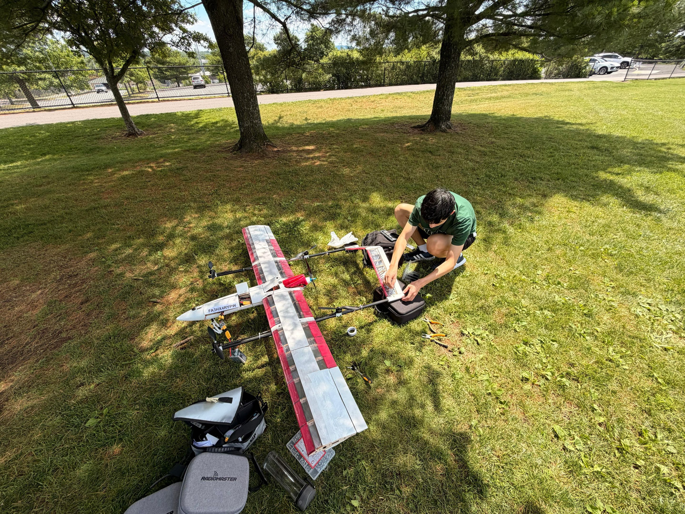
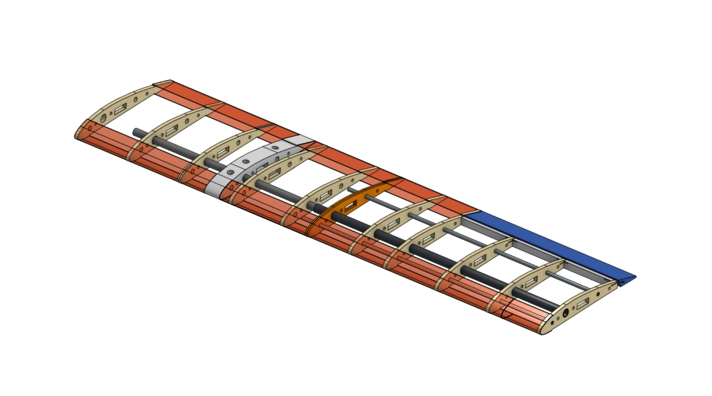

Projects
This project for the BU UAV team consisted of a large autonomous-VTOL custom built to meet the mission requirements of the SUAS university competition.
This included the aircraft travelling 15+ miles over several laps on an airfield, autonomous takeoff/landing and flight, search and rescue with a payload drop, along with
terrain mapping via a camera. I worked mainly on the mechanical design, including aerodynamic configuration, CAD, and structure of the VTOL UAV. I worked on optimizing the plane
for sufficient strength while maintaining a low weight in order to reduce required takeoff speed and allow for a reasonable cruise airspeed.
The plane's physical structure mainly consisted of carbon fiber tubing, balsa wood, and 3-D printed PETG. This were considered the most optimal
materials for keeping costs low while still having a robust airframe that would resist in-flight forces. This was mainly designed in Onshape and Fusion360. I also
worked and coded a PID-stabilized system mounted underneath the aircraft to carry a camera so that the orientation would always be straight down.
Tools & Skills: Fusion360, Onshape, Structures, VTOL, Aircraft Design, Autonomous Navigation, Ardupilot, C++, PID

